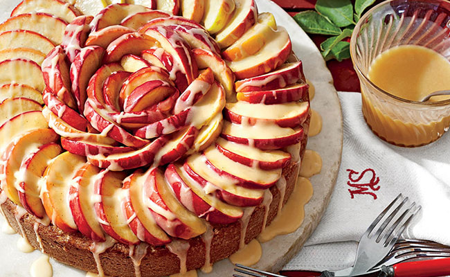
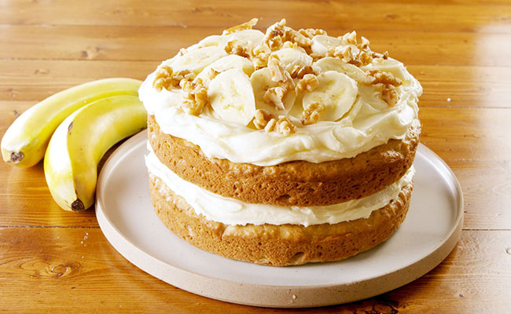
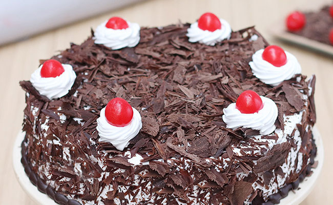
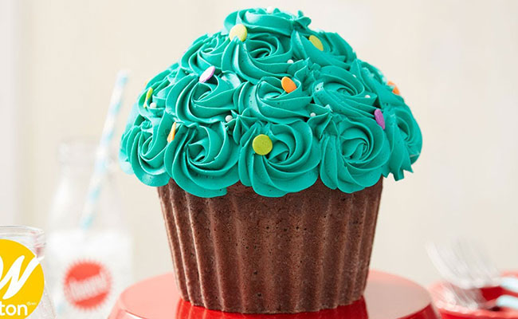
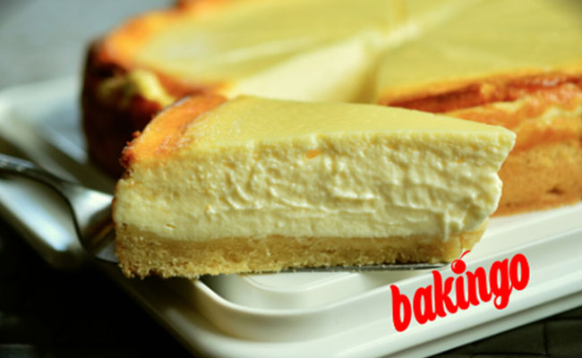

Cakes
1.Angel-food-cake
Talking about tempting types of cake, an angel cake tops the list. The Angel Food Cake is baked in a tube pan and uses egg whites, cream of tartar, flour, and sugar as ingredients.
Price : 300/- kg

2.Apple-cake
Another in the list of cake flavours name with images is Apple Cake, as the name suggests, uses apples as the main ingredient and decorated with slices of fresh apple. Its sweet and sour taste is devoured by a large audience. So even you can get your hands on it.
Price : 400/- kg

3.banana-cake
Originated in the United States, Banana cake is made using mashed ripe bananas. Using wheat, water, sugar and bananas, this delicacy has its own fan base. Topped with chopped bananas for justification and delight!
Price : 350/- kg

4.black-forest-cake
The black forest cake is originated in Germany and usually made using chocolate, whipped cream, and cherries.
Price : 400/- kg

5.cup-cake
A cup-sized version of cakes, cupcakes are too good for small and sweet hunger calls. From kids to elderly people, everyone is fond of these tiny delicacies.
Price : 70 (per piece)

6.cheese-cake
Cheesecake is a perfect blend of yummy and creamy cheese and soft bread. Melt-in-mouth sweetness!
Price : 500/- kg
